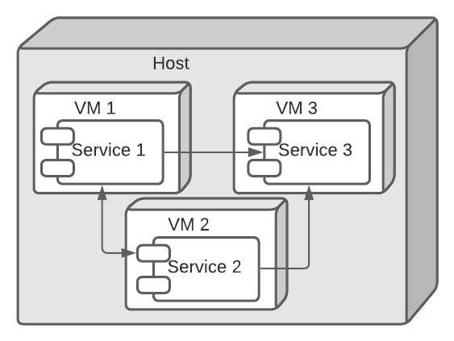

Written by Mehdi CHEBBAH & Yacine ZIDELMAL.

IntroductionDeployment techniquesMultiple service instances per hostSingle service instance per hostService instance per VMService instance per ContainerConclusionFurther Reading
Introduction
In this article we will learn the difference between deploying a monolithic application and deploying a microservices application, we will discuss the different available options and the advantages and disadvantages of each of them. So lets get straight into it.
Deploying a monolithic application means running multiple, identical copies of a single, usually large application. You typically provision N servers (physical or virtual) and run M instances of the application on each one. The deployment of a monolithic application is not always entirely straightforward, but it is much simpler than deploying a microservices application.
A microservices application consists of tens -or even hundreds- of services. Services are written in a variety of languages and frameworks. Each one is a mini‑application with its own specific deployment, resources, scaling, and monitoring requirements. For example, you need to run a certain number of instances of each service based on the demand for that service. Also, each service instance must be provided with the appropriate CPU, memory, and I/O resources. What is even more challenging is that despite this complexity, deploying services must be fast, reliable and cost‑effective.
Deployment techniques
There are multiple ways of deploying a microservices based system, here they are:
Multiple service instances per host
The first way is to run multiple instances of different services on a host (Physical or Virtual machine). The deployed system looks like this:

The benefits of this pattern include:
- More efficient resource utilization than one service instance per host (The next pattern).
The drawbacks of this approach include:
- Risk of conflicting resource requirements;
- Risk of conflicting dependency versions;
- Difficult to limit the resources consumed by a service instance;
- If multiple services instances are deployed in the same process then its difficult to monitor the resource consumption of each service instance. Its also impossible to isolate each instance.
Single service instance per host
The second option is to deploy each single service instance on its own host. An example of this deployment pattern is shown here:

The benefits of this approach include:
- Services instances are isolated from one another;
- There is no possibility of conflicting resource requirements or dependency versions;
- A service instance can only consume at most the resources of a single host;
- Its straightforward to monitor, manage, and redeploy each service instance;
The drawbacks of this approach include:
- Potentially less efficient resource utilization compared to Multiple Services per Host because there are more hosts.
Service instance per VM
Package the service as a virtual machine image and deploy each service instance as a separate VM. This means the system will look like this:

The benefits of this approach include:
- Its straightforward to scale the service by increasing the number of instances;
- The VM encapsulates the details of the technology used to build the service;
- Each service instance is isolated;
- A VM imposes limits on the CPU and memory consumed by a service instance;
- IaaS solutions such as AWS provide a mature and feature rich infrastructure for deploying and managing virtual machines;
The drawbacks of this approach include:
- Building a VM image is slow and time consuming.
Service instance per Container
Package the service as a container image and deploy each service instance as a container. Docker could be used to create container images and these containers could be manipulated using a framework such us Docker Compose, Kubernetes, Marathon/Mesos, ...etc. This solution is presented in the following figure:

The benefits of this approach include:
- It is straightforward to scale up and down a service by changing the number of container instances;
- The container encapsulates the details of the technology used to build the service;
- Each service instance is isolated;
- A container imposes limits on the CPU and memory consumed by a service instance;
- Containers are extremely fast to build and start. For example, it’s 100x faster to package an application as a Docker container than it is to package it as a VM. Docker containers also start much faster than a VM since only the application process starts rather than an entire OS.
The drawbacks of this approach include:
- The infrastructure for deploying containers is not as rich as the infrastructure for deploying virtual machines.
Conclusion
We can recap the pros and cons of the mentioned 4 strategies in the following table:
| Multiple instances per host | Single instance per host | Single instance per VM | Single instance per container | |
|---|---|---|---|---|
| Isolation | No isolation | Isolated | Isolated | Isolated |
| Risk of conflicts | Yes | No | No | No |
| Resources management | No | Yes | Yes | Yes |
| third-party solutions | No solutions | Some solutions | Multiple solutions | A lot of solutions |
| Resources efficiency | Efficient | Not efficient | Efficient | Very efficient |
| Scaling | Hard | Easy | Very easy | Very easy |
| Build time | / | / | Slow | Fast |
Further Reading
- Deploying Microservices: Choosing a Strategy (2016) NGINX. Available at: https://www.nginx.com/blog/deploying-microservices/ (Accessed: 24 December 2021).
- Deploying microservices. Available at: https://microservices.io/articles/deployment.html (Accessed: 24 December 2021).